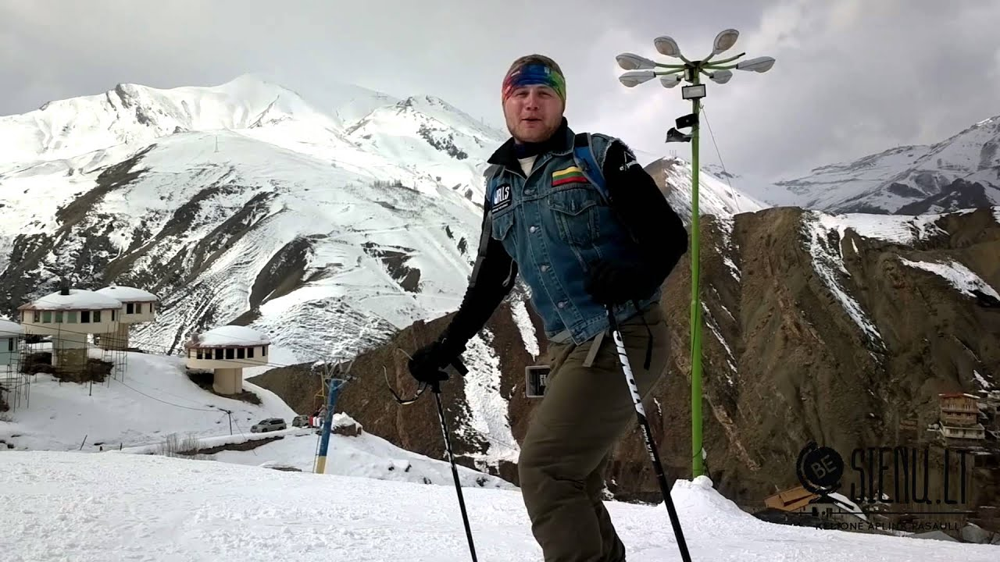
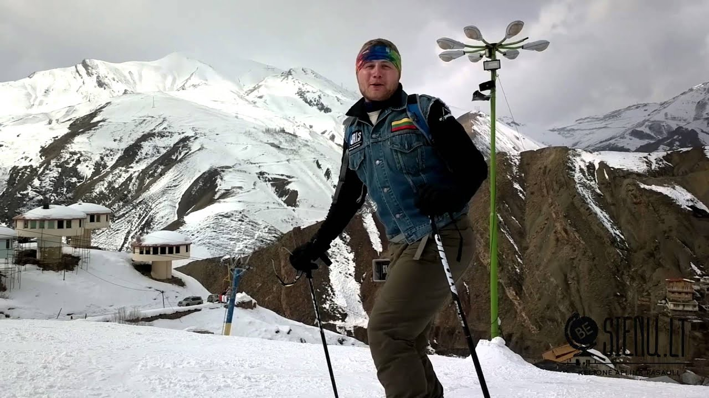

Slidinėjimas | Sportland Magazine
2020.10.30 03:16
Naujienos Rinktinės kapitonas Ž. Radžius – apie regbio atmainas ir jų skirtumus M. Stonkus: motyvacija ateina su branda Rekordiškai gausiame „Pink run“ bėgime triumfavo tituluotos stajerės ir pergalių nesitikėję vyrai A. Palšytė: kiekvieną dieną turi stengtis būti geriausia savo versija Kovotojo H. Vikšraičio istorija – kaip sportas išgelbėjo nuo alkoholio ir skurdo Pirmas kartas sporto klube – ką reikėtų žinoti? Kaip išlaikyti norą bėgioti, kai už lango vėsta ir temsta? Atlikėjas D. Montvydas: „Vieną judesį šlifavau iki deimanto blizgesio“ Trenerė L. Gudžiauskienė: man tiesiog patinka varžytis Lietuvoje užfiksuotas naujas sporto rekordas LIT EST LAT Meniu Įžymybės Viršelio istorija Sporto žvaigždės Gyvenimo istorijos Sportas Žiemos sportas Ledo ritulys Slidinėjimas Bėgimas Futbolas Krepšinis Plaukimas Dviratis/Riedučiai Treniruotės Treneris Laisvalaikis Tenisas Tinklinis Buriavimas/Banglentės Sportas salėje Rankinis Lengvoji atletika Sportas laisvalaikiui Gyvenimo būdas Karšta naujiena Naudinga Judėjimas Mityba Galerija Įvykiai Mes Parduotuvės Darbuotojai Žurnalas 2017 vasara 2017 žiema 2016 vasara 2016 žiema 2015 vasara KONKURSAS
Slidinėjimas
Tėvu tapęs biatlonininkas V. Strolia: norėtųsi, kad Lietuvoje būtų daug sniego
SportasKalnų slidinėjimo ir snieglenčių sezonui galima pasirengti ir sporto klube
SportasKaip susiplanuoti tobulas slidinėjimo atostogas
Gyvenimo būdasKylanti Lietuvos žiemos sporto žvaigždė M. Morauskas: snieglentės yra labai linksmos
SportasDJ Mamania ir jo dvi aistros: muzika bei ekstremalus sportas
Gyvenimo būdas SportasVasarą vandens, žiemą – kalnų slidės
5. kovo 2019 Sportas„Dažnas vandens slidininkas žiemą pavirsta kalnų slidininku“, – teigia vandens slidinėjimo pasaulio čempionato prizininkas ir vandens slidinėjimo sporto klubo „Skriejantieji…
X žaidynės užkariauja pasaulį
20. vasario 2019 Įvykiai SportasX žaidynės JAV televizijos kanalo ESPN iniciatyva gimė Jungtinių Amerikos Valstijų rytinėje pakrantėje, Rod Ailando valstijoje, 1995 m. Priežastis buvo…
Posūkiai ant sniego
18. vasario 2019 SportasVieni olimpiečiai biatloną išmainė į slidinėjimą, kiti – atvirkščiai, bet visi vienbalsiai tvirtina, kad antrasis pasirinkimas teikia daugiau emocijų ir…
Lenktynės su vėju
5. vasario 2019 ĮžymybėsVėjas galvoje ir begalinis malonumas leistis nuo kalno ant spalvingos lentos. Nors suvaldyti snieglentę sunkiau nei slides, šio žiemos sporto…
Jei nori – viskas įmanoma
29. sausio 2019 SportasJo tikslas – olimpinis medalis ir pasaulio čempionato auksas. Taip pat pergalės Pasaulio taurės varžybose. Nors Lietuvoje nėra kalnų, o…
Kaip išsirinkti kalnų slidinėjimo įrangą?
28. sausio 2019 SportasSniego sporto mėgėjų pagrindinis kelionių sezonas prasidėjo. Visiems žinoma, kad įsimintinoms slidinėjimo atostogoms reikia sumaniai parinktos įrangos. Ją galima nesunkiai…
Niujorko Cosmos: galingiausia komanda JAV futbolo istorijoje
SportasKalnų mylėtojai – šiltos ir funkcionalios dovanos
21. gruodžio 2018 Gyvenimo būdasPasibaigus šventėms, aktyvaus poilsio mėgėjai paprastai pradeda planuoti kelionę į kalnus. Visi puikiai žino, kad šliuožimas snieglente ar slidinėjimas reikalauja…
Nuo šalčio saugančios dovanos mažiesiems žiemos gerbėjams
20. gruodžio 2018 Gyvenimo būdasVisi puikiai žino, kad svarbiausi kriterijai, renkantis žiemos aprangą vaikams, yra šiluma ir patogumas. Todėl jei norite, kad jūsų atžalos…
Kartų kaitos išvengę biatlonininkai tikisi iššauti
3. gruodžio 2018 SportasGongas duotas: naujas olimpinis ciklas – prasideda. Nuo sekmadienio žiemos sporto aistruolių kvapą keturis mėnesius užgniauš pasaulio biatlono taurės varžybų…
Džiaugsmingi slidinėjimo kelionių atradimai
26. vasario 2018 Gyvenimo būdasJeigu tradiciniai kalnų slidinėjimo kurortai jau pabodo, pats laikas atrasti neįprastas pasaulio vietas, kur savo slidinėjimo įgūdžius galėsite rimtai išbandyti.…
Kai sporto niekada negana
23. vasario 2018 Įžymybės SportasJei Kazimiera Strolienė rašytų savo autobiografiją, ji išeitų stora ir pilna istorijų apie pasirinkimus. Lietuvos slidinėjimo rinktinės trenerė visada buvo…
Kalnų slidininkei – dviguba šventė
16. vasario 2018 SportasLietuvos valstybės atkūrimo 100-mečio dieną Ieva Januškevičiūtė tapo geriausiai olimpinėse žaidynėse pasirodžiusia Lietuvoje gimusia kalnų slidininke. „Jei atvirai, nesitikėjau“, …
Vingio parke – dar daugiau sporto renginių
Įvykiai SportasBiatlonininkas Tomas Kaukėnas tryliktas
12. vasario 2018 SportasBiatlonininkas Tomas Kaukėnas, vakar užėmęs 17-tą vietą biatlono sprinte, šiandien nudžiugino pagerintu nepriklausomos Lietuvos rekordu 12,5 km biatlono persekiojimo lenktynėse…
Olimpinės žaidynėse – naujos rungtys
7. vasario 2018 Įvykiai Sportas2018 m. Pjongčango žiemos olimpinėse žaidynėse sportininkai kovos penkiolikos sporto šakų varžybose. Čia bus išdalyti net 102 medalių komplektai. Šešis…
Kaip karys Kaukėnas išmoko suvaldyti stresą
5. vasario 2018 SportasBiatlonininkas Tomas Kaukėnas pastaruosius dvejus metus bendraudamas su sporto psichologu išsiaiškino, kad psichologinių bėdų jis neturi. Pokalbiai su psichologu atskleidė…
Lietuvos biatlonininkai į olimpines žaidynes išlydėti Trakuose
1. vasario 2018 Įvykiai SportasAnt plono Galvės ežero ledo šalia Trakų pilies Lietuvos biatlono delegacija buvo išlydėta į Pjongčango olimpines žaidynes, kurios vyks vasario…
Žiemos olimpinės žaidynės – iš arti. I dalis
30. sausio 2018 Įvykiai SportasPjongčango žiemos olimpinėse žaidynėse atletai varžysis penkiolikos sporto šakų varžybose, kurias sudarys net 102 rungtys. Šioje dalyje slidinėjimo sporto šakų apžvalga.…
Kalnų slidininkė savo silpnybes paverčia stiprybėmis
23. sausio 2018 SportasKartą jau paragavusi olimpinių žaidynių skonio Lietuvos kalnų slidininkė Ieva Januškevičiūtė dabar visas mintis sutelkusi į 2018 m. Pjongčango žaidynes.…
Kaip išsirinkti tinkamas slides
17. sausio 2018 SportasAtšalus orams žiemos sporto mėgėjai nekantriai ima laukti, kada žemę padengs sniego paklotė. O sulaukę skuba traukti slides ir išbandyti…
Ekstremalių pojūčių mėgėjas Jonas Olssonas
22. gruodžio 2017 SportasVienas žinomiausių pasaulio profesionalių slidininkų 35 metų Jonas Olssonas užaugo Švedijoje, bet šiuo metu gyvena Monake. Jis dar žinomas kaip…
Susirgę kalnų liga
28. lapkričio 2017 Gyvenimo būdas SportasIš pradžių tai buvo tik idėja tapti juridiniu vienetu, kad būtų galima oficialiai prašyti paramos, nes kalnų slidinėjimas lietuviams –…
Į Pjongčangą – perrašyti istorijos
17. lapkričio 2017 SportasLietuvos biatlono rinktinės užmoju 2018 m. Pjongčango žiemos olimpinėse žaidynėse turėti dvi moteris ir du vyrus netikėjo niekas, išskyrus pačius…
SLIDINĖJIMO APRANGA. 2018 ŽIEMA
9. lapkričio 2017 GalerijaŽIEMOS SPORTO ĮRANGA. 2018 ŽIEMA
9. lapkričio 2017 Galerija SportasLietuvos biatlonininkai olimpinį sezoną pasitinka ambicingai
2. lapkričio 2017 SportasLietuvos biatlono federacija (LBF) prieš artėjančias Pjongčango žiemos olimpines žaidynes susilaukė papildomo dėmesio. Lietuvos biatlonininkai nuo šiol turės naują partnerį…
Diagnozė: adrenalino trūkumas!
17. lapkričio 2016 SportasJeigu tradicinės žiemos sporto šakos nepateisina vilčių, nesuteikia laukto malonumo ir vis tiek kyla pagunda pažvelgti į akis prigimtiniams savo…
Tinkamas slidžių vaškavimas – didesnė motyvacija
16. lapkričio 2016 SportasSlidžių vaškavimo technikos nesunkiai gali išmokti kiekvienas, o įgudusio tai daryti slidininko motyvacija čiuožti taip padidėja, kad pranoksta ne tik…
Daugiau straipsniųŽurnalas „Sportland Magazine“ – tai didžiausio tiražo gyvenimo būdo ir sporto žurnalas Lietuvoje. Leidinys dalinamas geriausiems „Sportland“ klientams ir partneriams. Žurnalą taip pat galima gauti parduotuvėse „Sportland“ perkant už didesnę sumą. Leidinys dalinamas ir didesniuose sporto renginiuose.
Kontaktai
Sportland LT, UAB
Šeimyniškių g. 3
Vilnius, LT-09321, Lietuva
+370 5 275 5012
info@sportland.lt
Apie
Apie mus Atsiųskite savo straipsnį Sportland Lietuva puslapis Privatumo PolitikaParduotuvės
Sportland Timberland Sportland Outlet SportsDirect- slidinėjimas | Mindaugo blogas
- Slidinėjimas - Blogger
- Slidinėjimo akademija
- Lygumų slidinėjimas (XC)
- Lėktuvu Archives - Slidinėjimas
- kalnumagija - Kalnų slidinėjimo blogas
- Lietuvos nacionalinė slidinėjimo asociacija
- Slidinėjimo kelionės
- slidinėjimas
- Slidinėjimas | Slidinėjimo kelionės | Slidinėjimo kurortai ...
- slidinėjimas | Mindaugo blogas
Iš pradžių tai buvo tik idėja tapti juridiniu vienetu, kad būtų galima oficialiai prašyti paramos, nes kalnų slidinėjimas lietuviams –… Į Pjongčangą – perrašyti istorijos 17. lapkričio 2017
- Slidinėjimas - Blogger
Slidinėjimas. Tik geriausi pasiūlymai slidinėjimo kelionėms į Austriją, Italiją, Slovakiją, Prancūziją ir kt. šalis vykstant autobusu, lėktuvu, savo ...
- Slidinėjimo akademija
Slidinėjimo kelionės - apsilankykite ir išsirinkite šalį, kelionės datą, bei pasinerkite į nepaprastą nuotykį. Visi išvykimai garantuoti!
- Lygumų slidinėjimas (XC)
Slidinėjimas yra originalus ir atsižvelgiant į dalyvių skaičių, viena iš skaitilngiausių šiaurinių („nordic“) sporto šakų, kurios vadinamos šiaurinėmis dėl kilmės geografine prasme, kadangi išsivystė šiaurinėje Europos dalyje, priešingai nei kalnų „alpine skiing “slidinėjimas, kurio kilmė siejama su Alpėmis.
- Lėktuvu Archives - Slidinėjimas
Slidinėjimo Akademijoje apsilankė ypatingas svečias - Lietuvos Respublikos Prezidentė. Ji ne tik domėjosi, kaip mums sekasi, stebėjo slidinėjančius klientus, bet ir susidomėjusi klausėsi apie vienintelę tokią sporto ir laisvalaikio erdvę ne tik Lietuvoje, bet ir visose Baltijos šalyse, kasdien sutraukiančią šimtus žiemos sporto gerbėjų.
- kalnumagija - Kalnų slidinėjimo blogas
Slidinėjimas 250 kilometrų trasų turinčiame Serre Chevalier yra tarsi kelionė: nuo neįprastai aukštai čia augančių medžių vainikų leisdamiesi žemyn jausitės, lyg čiuožtumėte per skirtingas šalis ir kraštovaizdžius.
- Lietuvos nacionalinė slidinėjimo asociacija
Slidinėjimas ir čiuožimas snieglente yra nesuvaržytos sporto šakos, kur kiekvienas gali judėti kur ir kaip tik nori, su sąlyga, kad jie laikysis taisyklių ir čiuoš atsižvelgdami į savo asmeninius gebėjimus ir kalnuose vyraujančią padėtį. Slidininkas ar snieglenintininkas priešakyje turi pirmumo teisę.
- Slidinėjimo kelionės
slidinėjimas Lyguminių slidžių video žiemai/vasarai. June 6, 2014 June 6, 2014 karalius Laisvalaikis/Hobbies laisvalaikis, slidinėjimas, vasara, žiema. Labai paprastas, bet tuo pačiu daug parodantis apie techniką ir slidinėjimo būdus žiemą vasarą su lyguminėmis slidėmis. Vilniuje jau taip pat atsiranda vienas kitas “vasarinis ...
- slidinėjimas
slidinėjimas statusas T sritis Kūno kultūra ir sportas apibrėžtis Kai kurių žiemos sporto šakų (biatlono, slidinėjimo dvikovės) varžybų sudedamoji dalis.atitikmenys: angl. skiing vok. Skisport, m rus. лыжный спортrus. лыжный спорт
- Slidinėjimas | Slidinėjimo kelionės | Slidinėjimo kurortai ...
Slidinėjimas Ötztal Pagrindiniai slidinėjimo kurortai : Obergurgl-Hochgurgl trasų 112 km, mėlynų 60 km, raudonų 33 km, juodų 14 km, aukščiai 1800 - 3030 m virš jūros lygio. Sölden trasų 146 km, mė...
Iš pradžių tai buvo tik idėja tapti juridiniu vienetu, kad būtų galima oficialiai prašyti paramos, nes kalnų slidinėjimas lietuviams –… Į Pjongčangą – perrašyti istorijos 17. lapkričio 2017
Slidinėjimas. Tik geriausi pasiūlymai slidinėjimo kelionėms į Austriją, Italiją, Slovakiją, Prancūziją ir kt. šalis vykstant autobusu, lėktuvu, savo ...
Slidinėjimo kelionės - apsilankykite ir išsirinkite šalį, kelionės datą, bei pasinerkite į nepaprastą nuotykį. Visi išvykimai garantuoti!
Slidinėjimas yra originalus ir atsižvelgiant į dalyvių skaičių, viena iš skaitilngiausių šiaurinių („nordic“) sporto šakų, kurios vadinamos šiaurinėmis dėl kilmės geografine prasme, kadangi išsivystė šiaurinėje Europos dalyje, priešingai nei kalnų „alpine skiing “slidinėjimas, kurio kilmė siejama su Alpėmis.
Slidinėjimo Akademijoje apsilankė ypatingas svečias - Lietuvos Respublikos Prezidentė. Ji ne tik domėjosi, kaip mums sekasi, stebėjo slidinėjančius klientus, bet ir susidomėjusi klausėsi apie vienintelę tokią sporto ir laisvalaikio erdvę ne tik Lietuvoje, bet ir visose Baltijos šalyse, kasdien sutraukiančią šimtus žiemos sporto gerbėjų.
Slidinėjimas 250 kilometrų trasų turinčiame Serre Chevalier yra tarsi kelionė: nuo neįprastai aukštai čia augančių medžių vainikų leisdamiesi žemyn jausitės, lyg čiuožtumėte per skirtingas šalis ir kraštovaizdžius.
Slidinėjimas ir čiuožimas snieglente yra nesuvaržytos sporto šakos, kur kiekvienas gali judėti kur ir kaip tik nori, su sąlyga, kad jie laikysis taisyklių ir čiuoš atsižvelgdami į savo asmeninius gebėjimus ir kalnuose vyraujančią padėtį. Slidininkas ar snieglenintininkas priešakyje turi pirmumo teisę.
slidinėjimas Lyguminių slidžių video žiemai/vasarai. June 6, 2014 June 6, 2014 karalius Laisvalaikis/Hobbies laisvalaikis, slidinėjimas, vasara, žiema. Labai paprastas, bet tuo pačiu daug parodantis apie techniką ir slidinėjimo būdus žiemą vasarą su lyguminėmis slidėmis. Vilniuje jau taip pat atsiranda vienas kitas “vasarinis ...
slidinėjimas statusas T sritis Kūno kultūra ir sportas apibrėžtis Kai kurių žiemos sporto šakų (biatlono, slidinėjimo dvikovės) varžybų sudedamoji dalis.atitikmenys: angl. skiing vok. Skisport, m rus. лыжный спортrus. лыжный спорт
Slidinėjimas Ötztal Pagrindiniai slidinėjimo kurortai : Obergurgl-Hochgurgl trasų 112 km, mėlynų 60 km, raudonų 33 km, juodų 14 km, aukščiai 1800 - 3030 m virš jūros lygio. Sölden trasų 146 km, mė...

 
